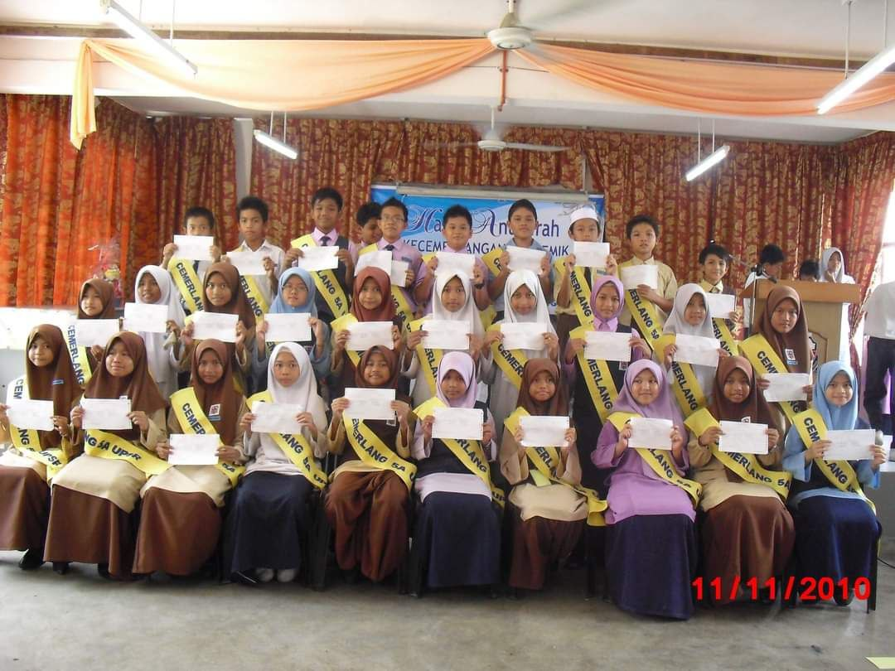
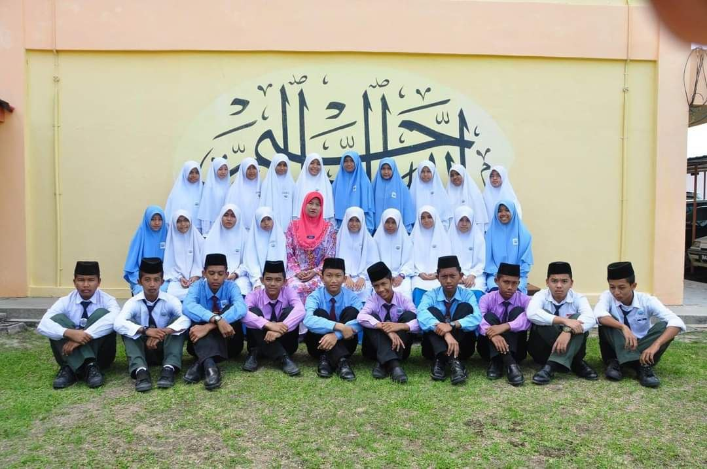
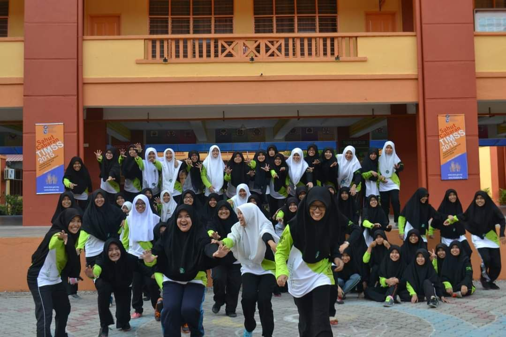
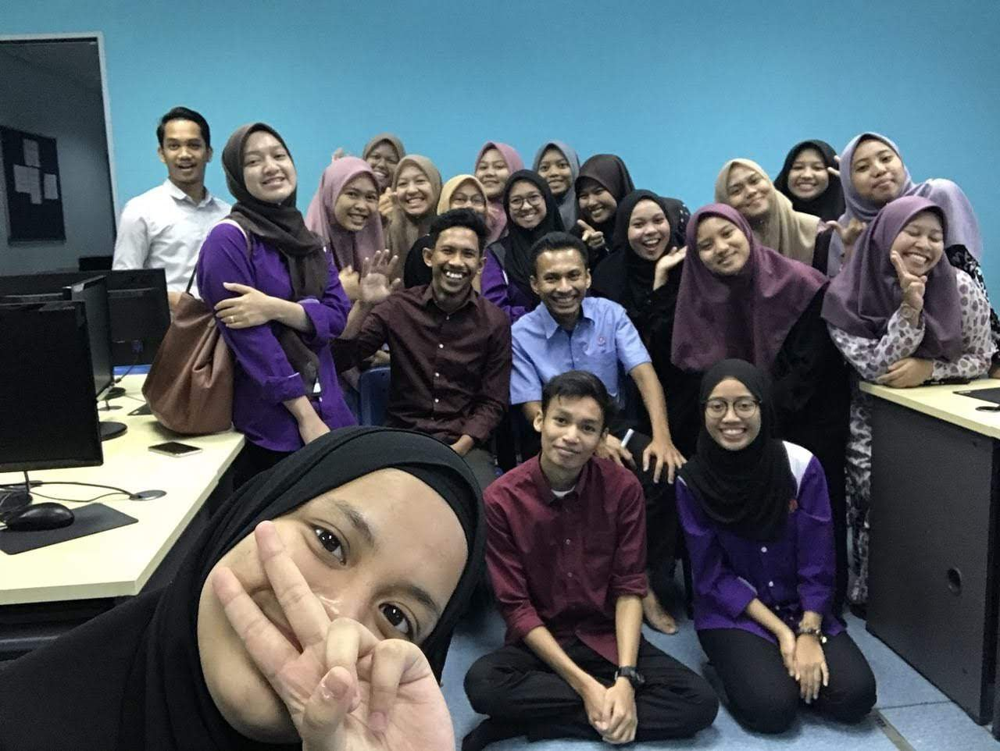
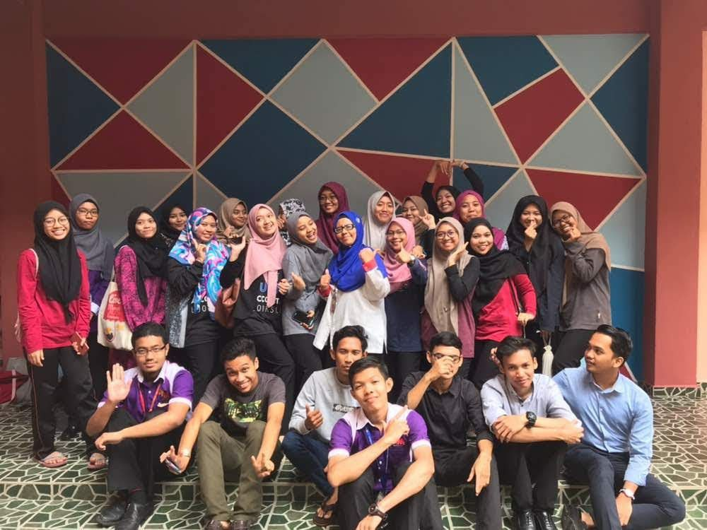
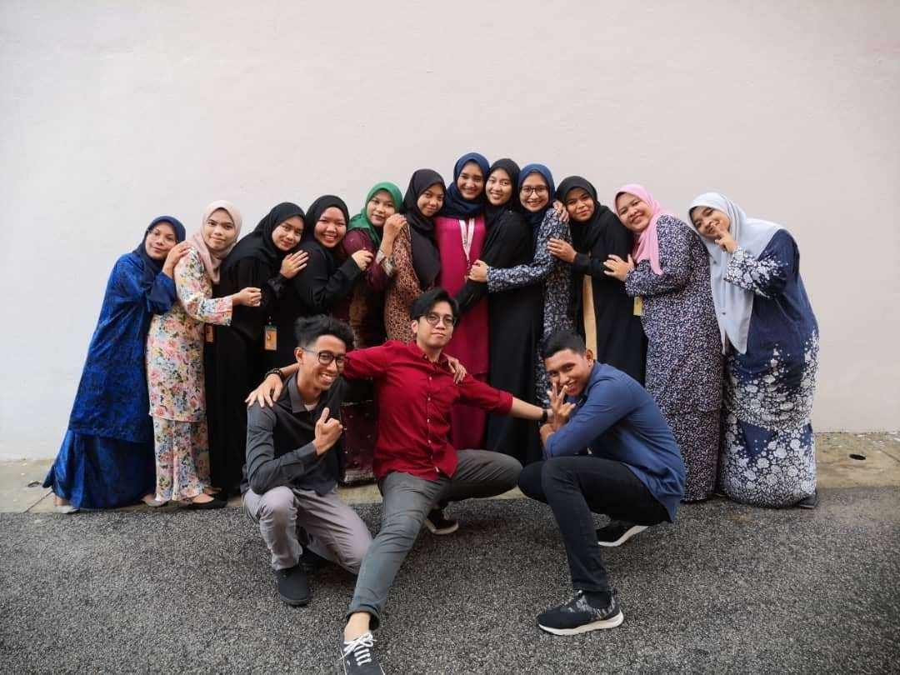
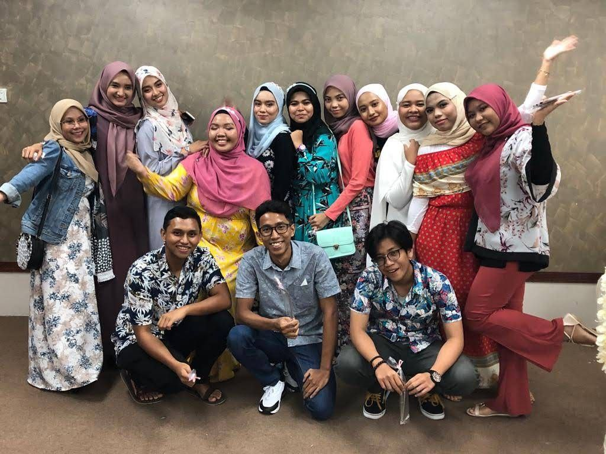

MY EDUCATION


My Working Experience
Primary School
I went to primary school in 2005 until 2010 at Sekolah Kebangsaan sri Melor. For UPSR I manage to get 5A's and manage to countinue my study in MARA but at that time i choose to countinue my study at Sekolah Menengah Agama Tok Bachok.
 Secondary School
I started my secondary school at Sekolah Menengah Agama Tok Bachok but after PMR, my result bring me to Sekolah Berasrama Penuh Integrasi Batu Rakit, Terengganu. To fulfil my parents wish I countinue my form 4 at new school with new friends.
 Diploma
After receive SPM result, i get two offer which is from UITM and Kolej Profesional MAra. At that time I make my own decision to countinue my study at Kolej Profesional Mara in Accounting. I choose Mara because they offer a cheap fees and they also provided allowance for all the student.
 Degree
Now i study at University Teknology Mara UiTM cawangan Kota Bharu in Bachelor of Administration(hons) Islamic Banking.